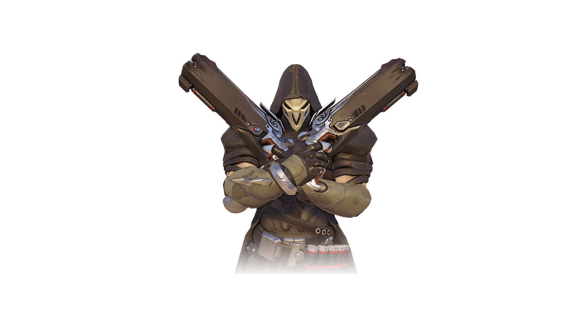

Overwatch Spotlight: Reaper

Reaper's Abilities
-
The Reaping (Passive) - Collect soul globes to restore health.
-
Hellfire Shotguns - Reaper tears enemies apart with twin shotguns.
-
Wraith Form - Reaper becomes a shadow for a short period of time. While in this form, he cannot take damage and is able to pass through enemies.
-
Shadow Step - After marking a destination, Reaper disappears and reappears at that location.
-
Death Blossom (Ultimate) - In a blur of motion, Reaper empties both hellfire shotguns at breakneck speed, dealing massive damage to all nearby enemies.